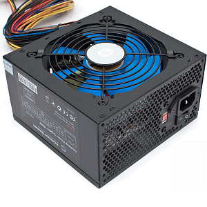

Składamy komputer. Dobieramy odpowiedni zasilacz. Część 1.
Z serii poradnika o samodzielnym składaniu komputera, obliczamy i dobieramy zasilacz komputera. Pokazujemy, jak obliczyć moc zasilacza.

Aby powrócić kliknij baner.
Przy składaniu zestawów komputerowych największą uwagę skupiamy na tym, aby posiadać mocną kartę graficzną, szybki procesor, dużą ilość pamięci RAM albo pojemny dysk. Często nie zwracamy uwagi na inne komponenty, które być może nie wpływają na wydajność jak wyżej wymienione, ale nie mogą być dobrane w nieprawidłowy sposób, kierując się jedynie ceną, bo w ten sposób możemy szybki komputer skazać na równie szybką śmierć. Jednym i bodaj najważniejszym z takich komponentów traktowanych z przymrużeniem oka jest zasilacz. To on odpowiada za dostarczenie prądu do podzespołów PC, wypadałoby więc poświęcić mu chwilę aby mieć pewność, że GPU za grube setki złotych nie będzie katowane.
Ile mocy potrzebuję?
Odwieczne pytanie towarzyszące wyborowi zasilacza. Zasadniczo im więcej tym lepiej, bo będziemy mieć większy zapas mocy. Ale większa moc równa się też większej cenie. Co ważne, mocniejszy zasilacz nie oznacza wcale większego poboru prądu z gniazdka i większych rachunków. PSU (ang. Power Supply Unit, jednostka zasilająca – zasilacz) pobiera zawsze tyle prądu ile potrzebują aktualnie komponenty, a zapas mocy pozostaje niewykorzystany. Warto więc zasilacz dobrać tak, aby spełniał nasze wymagania i zapewniał sprawny, stabilny dopływ mocy, przy okazji nie przepłacając.
Do określenia ile mocy pobiera nasz komputer warto wykorzystać stronę:
http://www.enermax.outervision.com/
Narzędzie to pozwala na konkretny wybór podzespołów wraz z dodatkowymi komponentami takimi jak wentylatory różnego rodzaju czy urządzenia podłączone do portów USB. Na podstawie danych podanych przez producentów szacuje maksymalne możliwe zapotrzebowanie na moc całego zestawu.
Do określenia ile mocy pobiera nasz komputer warto wykorzystać stronę:
http://www.enermax.outervision.com/
Narzędzie to pozwala na konkretny wybór podzespołów wraz z dodatkowymi komponentami takimi jak wentylatory różnego rodzaju czy urządzenia podłączone do portów USB. Na podstawie danych podanych przez producentów szacuje maksymalne możliwe zapotrzebowanie na moc całego zestawu.
Pamiętajmy żeby zawsze dodać do tej wartości jakieś 10-15%, tak dla spokoju ducha i pewności, że tej mocy nie braknie.
Jaki zasilacz wybrać?
Kiedy mamy już oszacowane ile mocy potrzebujemy możemy zabrać się za wybieranie konkretnego źródła zasilania. Pierwszym kryterium powinna być marka. Zasilacze są na tyle specyficzne, że w internecie można znaleźć nawet specjalną czarną listę marek, których produkty porównywane są z tykającymi bombami. I jest to nawet trafne porównanie, bo nigdy nie mamy pewności czy takie „PSU”, mocą i stabilnością wskazujące na sklejanie w pośpiechu w zakurzonym, tajwańskim garażu, w końcu nie spłonie wraz z całym sprzętem.
Jeżeli nie lubimy życia w stresie to polecam zapoznanie się z produktami poniższych marek, których zasilacze są stabilne i dobrze wykonane:
Po ograniczeniu zakresu poszukiwań do odpowiednich producentów musimy wybrać zasilacz, który po pierwsze spełni wymagania naszych podzespołów odnośnie mocy, a po drugie będzie posiadał jak najwięcej certyfikatów i zabezpieczeń w interesującej nas cenie.
Jeżeli nie lubimy życia w stresie to polecam zapoznanie się z produktami poniższych marek, których zasilacze są stabilne i dobrze wykonane:
- OCZ
- Corsair
- Tagan
- SilentiumPC
- Thermaltake
- Chieftec
- BeQuiet!
- Antec
- Fortron
- XFX
- AeroCool
- CoolerMaster
- Enermax
- Seasonic
Po ograniczeniu zakresu poszukiwań do odpowiednich producentów musimy wybrać zasilacz, który po pierwsze spełni wymagania naszych podzespołów odnośnie mocy, a po drugie będzie posiadał jak najwięcej certyfikatów i zabezpieczeń w interesującej nas cenie.
Moc zasilacza
W przypadku komputerów najbardziej interesuje nas linia (albo linie) 12V. To z niej zasilane są najbardziej prądożerne podzespoły komputera (procesor i karta graficzna). Informacje o jej maksymalnym obciążeniu powinny być podane na tabliczce znamionowej zasilacza, która wygląda w ten sposób:
Co ważne, jeżeli zasilacz posiada linię 12V dzieloną na kilka (oznaczane jako 12V1 i 12V2) to nigdy nie sumujemy ich maksymalnego obciążenia. Często zachodzą nieporozumienia, gdyż przykładowo mając dwie linie 12V po 20A każda można wywnioskować, że ich obciążalność to 240W dla każdej. Ale obciążalność całej linii 12V to niekoniecznie 480W, prawdopodobnie mniej. Maksymalne obciążenie dla całej linii również powinno być podane przez producenta.
6.Zasilacz
